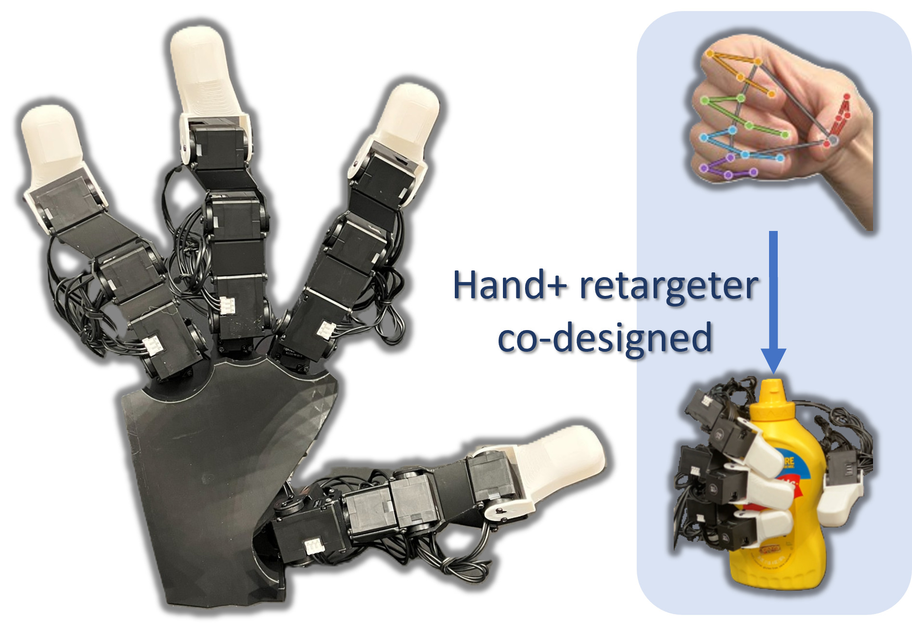
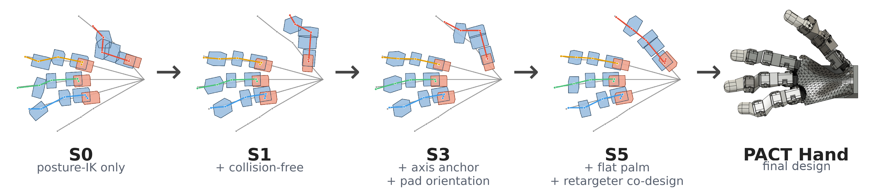
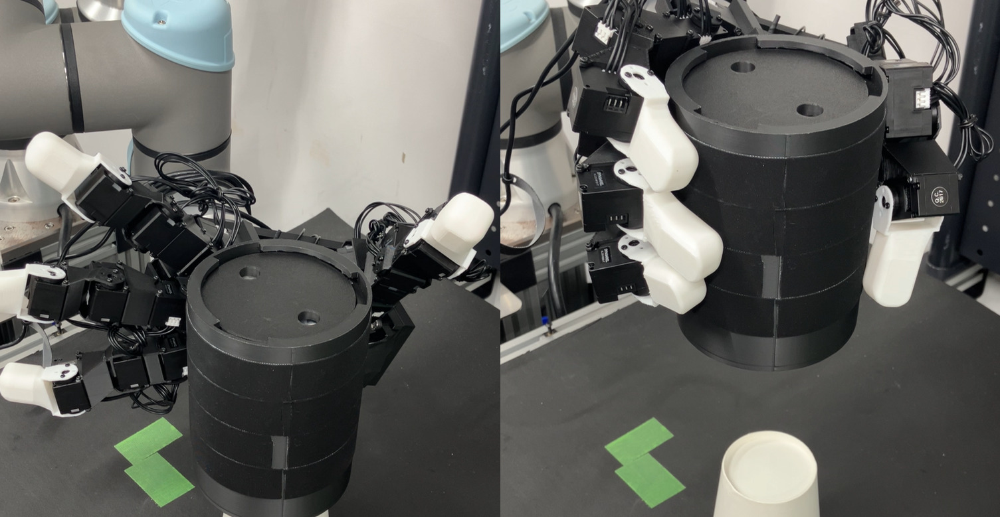
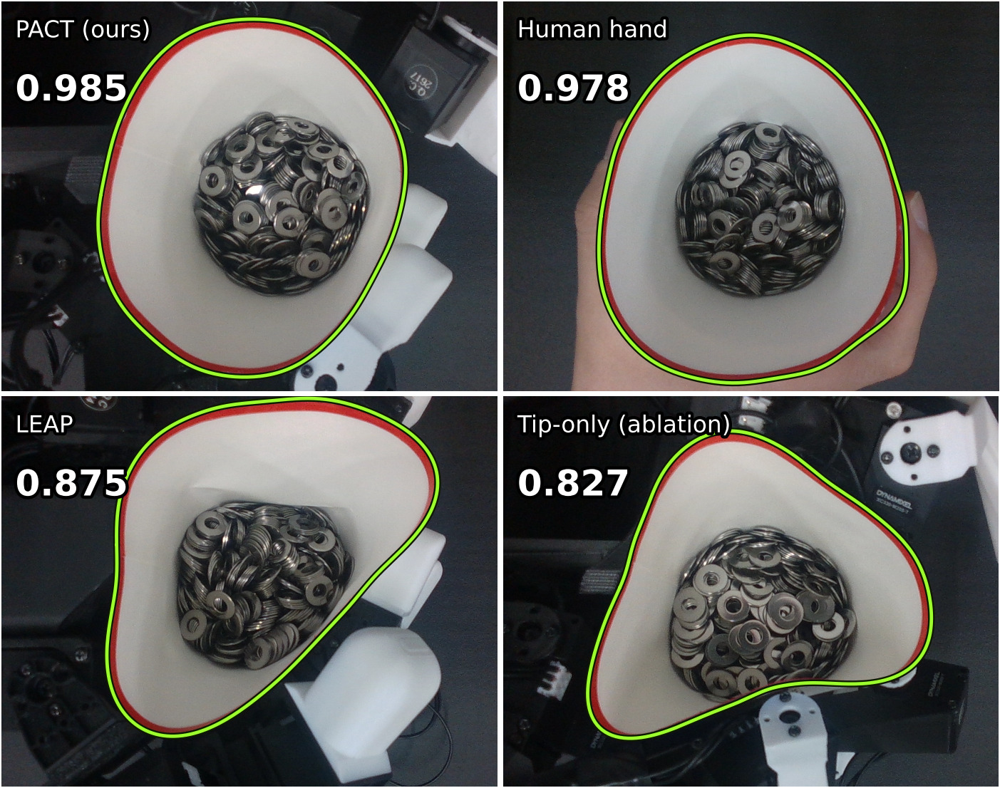
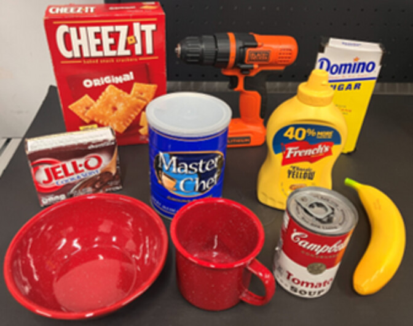
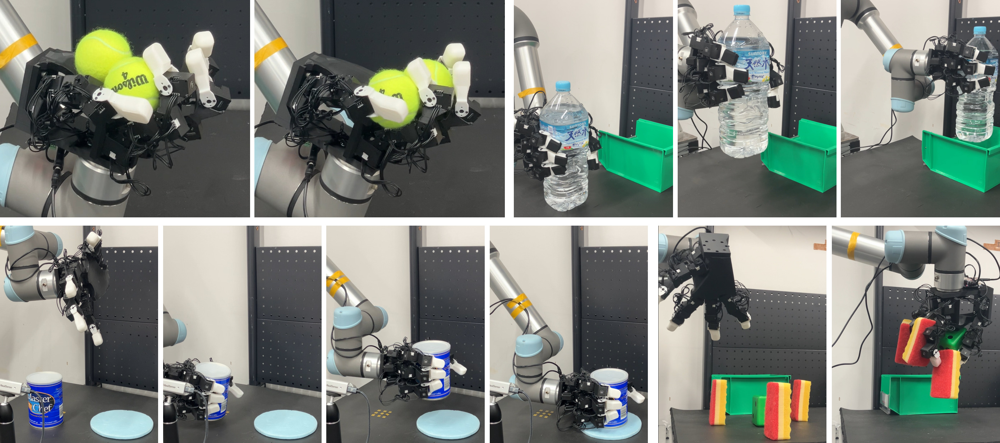

Under double-anonymous review

The fidelity of teleoperated demonstrations used for imitation learning is determined by how faithfully a robot hand can replicate the operator's posture. The posture retargeting law that the robot will ultimately execute is typically selected only once the hardware has been finalized. Conventional hand designs are derived from established mechanical principles, so they often neglect human-like grasping postures, which constrains the potential of learning-based dexterous manipulation. We introduce PACT, an optimization based on human grasping postures that jointly optimizes the mechanical parameters of a 17-servo robot hand (link lengths, joint offsets, mounting angles, and base placements) and its nonlinear posture retargeter (a linear human-to-robot joint map, per-joint posture-IK weights, and damping). The optimization enforces full-finger correspondence (MCP, PIP, DIP, and tip of each finger) to human poses from the DexYCB dataset, and is also constrained by physical requirements such as servo interference, assembly clearances, and flat-hand protrusion, so the resulting design can be physically assembled. We fabricate the PACT Hand and validate it through teleoperation experiments and an imitation-learning demonstration. The proposed hand reproduces all human hand keypoints with a kinematic root-mean-square error (RMSE) of 3.9 mm, compared to 12.8 mm for the LEAP Hand baseline, and keeps all fingertips within 10 mm on every grasping posture, while the baseline achieves this for only 21.6% of the poses. Under matched per-joint torque limits, the proposed hand lifts twice the baseline payload, 2 kg against 1 kg, and deforms a held paper cup seven times less, reaching a deformation level comparable to a human hand. It also achieves an 86% grasping success rate on YCB daily objects, compared to 64% for the baseline. Finally, as a demonstration, an imitation-learning policy trained on demonstrations collected with the PACT Hand achieved a 75% success rate at held-out placements in a can pick-and-place task.
PACT formulates hand design as deployed-retargeter–mechanism co-design: the design objective is the residual of the very posture-IK law that later runs on the robot. Link lengths, joint offsets, mounting angles, and finger-base placements are optimized jointly with the retargeter's own parameters, and a staged optimization folds servo interference, assembly clearance, and flat-hand protrusion into the same objective without compromising tracking accuracy.





This work is under double-anonymous review. A citation will be provided upon publication.
@article{anonymous2026pact,
title = {PACT: Posture-Aligned Co-Design Technique for Hand Configuration
and Retargeting in Multi-Finger Imitation Learning},
author = {Anonymous},
note = {Under review},
year = {2026}
}